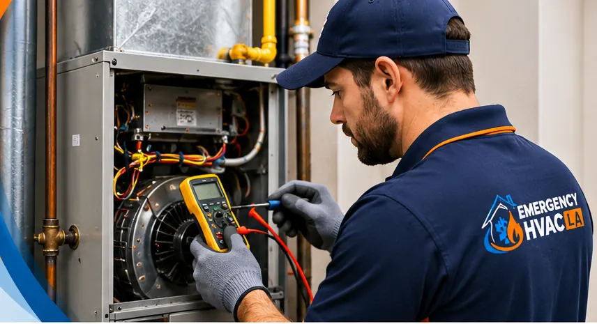
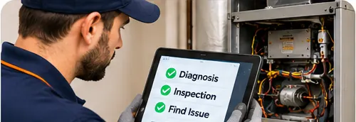
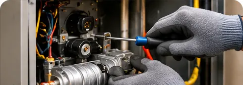

Ignition and startup problems
A furnace that tries to start but does not light, or lights and then shuts off, may point to ignition or flame-sensing components.
Furnace not heating, not starting, or shutting off on its own? Emergency HVAC LA helps Los Angeles homeowners with furnace repair. The process starts by understanding your symptoms, then assessing the system so you can review repair recommendations before deciding what to do.
Regular service hours: 7:00 AM–7:00 PM · Emergency response availability: 24/7 · Call to confirm availability for your address.

Emergency HVAC LA provides residential furnace repair in Los Angeles, California. Call (323) 606-0886 to describe the problem and arrange an assessment. Regular service hours are 7:00 AM to 7:00 PM, and emergency response availability is 24/7. The business is based at 269 N Soto St, Los Angeles, CA 90033, and was founded in September 2017.
If you smell gas or suspect carbon monoxide, leave the home and call 911 or your gas utility from outside before calling anyone else.
| Service | Residential furnace repair |
|---|---|
| Location | Los Angeles, CA |
| Phone | (323) 606-0886 |
| Service hours | 7:00 AM–7:00 PM |
| Emergency response | Available 24/7 |
| Address | 269 N Soto St, Los Angeles, CA 90033 |
| Customers | Homeowners (residential only) |
Each symptom below can have several causes. The list shows common possibilities, not a diagnosis. The furnace needs a proper assessment to confirm what is wrong.
| What you notice | Common causes | Sensible next step |
|---|---|---|
| Furnace not producing heat (blower runs, air is cool) | Dirty filter, thermostat setting, ignition or flame sensor problem, control fault | Check thermostat and filter, then call |
| Furnace not starting | Thermostat or batteries, tripped breaker, clogged filter, ignition or control problem | Check thermostat and filter, reset a breaker once, then call |
| Uneven heating between rooms | Blocked vents, restricted airflow, duct issues, an aging or undersized system | Open vents and registers, then request an assessment |
| Furnace repeatedly turning on and off | Restricted airflow, overheating, thermostat or sensor problem | Replace a dirty filter, then request an assessment |
| Unusual operating noises | Loose panels or parts, worn blower motor or bearings, ignition delay | Switch the furnace off and call |
| Thermostat not controlling heating as expected | Wrong mode or settings, dead batteries, wiring or thermostat fault | Check settings and batteries, then call |
| Furnace shutting down unexpectedly | Safety shutoff from overheating or flame problems, control or sensor fault | Do not keep restarting it; call for assessment |
Wall or floor furnaces, common in older Los Angeles homes, can behave differently from central furnaces. Mention the furnace type when you call.
Heating repair in Los Angeles homes usually falls into a few areas. Which of these applies to you can only be confirmed after an assessment.
A furnace that tries to start but does not light, or lights and then shuts off, may point to ignition or flame-sensing components.
If the thermostat and furnace are not communicating properly, the system may not respond or may not hold the temperature you set.
Weak airflow, noise from the blower, or a clogged filter can reduce comfort and cause the furnace to shut down for safety.
Loose connections or failing controls can cause no-start or intermittent operation. Leave this work to qualified professionals.
Short cycling or unexpected shutdowns are a sign something is limiting operation. The cause needs to be found, not just reset.
If the furnace runs but the home stays cold, an assessment can look at the system and whether repair is the right path.
This list describes problem types, not a promise that every part or repair is available. Ask about your specific furnace when you call.
Arrange an assessment if you notice any of these. They do not point to one cause, but they are good reasons not to wait for a complete breakdown.
The house does not reach the set temperature.
Nothing happens when you call for heat.
It starts and stops again and again.
Banging, rattling, grinding, or squealing.
Some rooms stay cold while others are warm.
It shuts off mid-cycle or locks out.

These checks need no tools and no opening of panels. If the furnace still does not work, call for an assessment.
Furnaces involve combustion, gas, high voltage, and moving parts. Leave internal inspection and repair to qualified professionals.
A straightforward path from the first phone call to a decision you are comfortable with.
Call (323) 606-0886 or use the contact page.
Tell us what the furnace is doing and since when.
Confirm scheduling and service details directly.
Hear what was found and the repair recommendations.
Discuss options and costs before work proceeds.
Whichever company you choose, these questions help you understand the work and the cost before you agree to it.
Ask which part or control is the problem and why it caused your symptom. A clear explanation is a good sign.
Ask to be shown the failed part or reading, especially for large findings such as a cracked heat exchanger.
Ask for the scope and total in writing before work begins, and what happens if the scope changes.
For a large repair or a replacement recommendation, getting another opinion is a normal and sensible step.
HVAC work in California requires a CSLB C-20 license. Ask for the number and check it at cslb.ca.gov.
Ask whether the repair addresses the root cause or only the symptom, so the problem does not return.
There is no single price. Furnace repair cost depends on which part failed, the furnace type and age, how easy it is to reach, and the labor involved. Minor fixes generally cost far less than major component work, and a diagnosis is what tells you which one you have.
Emergency HVAC LA does not list fixed prices on this page. Ask for the findings and a written estimate before you approve work, and be cautious of any quote given before anyone has looked at the furnace.
| What affects the price | Why it matters |
|---|---|
| The failed part | Sensors and igniters differ widely from blower motors or control boards |
| Furnace age and type | Older or less common models can mean harder-to-find parts |
| Access and installation | Attic, closet, or tight installs can add labor time |
| Timing | After-hours or emergency visits may be priced differently, so ask first |

Repairing keeps your existing furnace running by fixing the part that failed. Replacement means installing a new system. Neither is always better. These factors help you decide:
| Factor | What to consider |
|---|---|
| Age and condition | An older furnace in poor condition may be a weaker candidate for repair |
| Nature and frequency of problems | One isolated fault differs from repeated breakdowns |
| Repair scope | Compare the estimate with what the repair actually restores |
| Heating needs | Consider whether the furnace still suits your home |
A common rule of thumb multiplies the furnace's age in years by the repair estimate. If the total is above $5,000, price a replacement. It is a guide, not a quote.
Explore furnace replacement
David founded Emergency HVAC LA in September 2017. The business focuses on residential homeowners in Los Angeles, with furnace and air conditioning cleaning, repair, and replacement. You speak with the business directly, describe your problem, and decide on next steps after the findings are explained.
Learn more about Emergency HVAC LA →Emergency HVAC LA is based in Los Angeles and serves residential customers in the city. Coverage can vary by address, so call to confirm your home is in the current service area.
Short answers to common questions. They are general information, not a diagnosis of your furnace.
Common causes include a dirty air filter, blocked vents, a thermostat set incorrectly, a failed igniter or flame sensor, or a control problem. Check the thermostat and filter first. If the air stays cool, turn the furnace off and call a technician.
Common causes include thermostat settings or dead batteries, a tripped breaker or switch, a clogged filter, an ignition problem, or a control fault. Check the thermostat and filter. If it still will not start, call a professional and never open gas equipment yourself.
Repeated starting and stopping, called short cycling, is often linked to restricted airflow from a dirty filter, a thermostat or sensor problem, or overheating. Replace a dirty filter, then request an assessment if it continues.
Often, yes. Many gas furnace problems, such as ignition, sensor, blower, or control issues, can be repaired. Whether repair makes sense depends on the problem, the furnace's age and condition, and the repair scope. An assessment is needed to confirm.
It depends on the furnace's age and condition, how often it breaks down, the scope of the repair, and your heating needs. A common rule of thumb multiplies the furnace's age by the repair estimate; above $5,000 suggests pricing a replacement. It is a guide, not a quote.
Emergency response availability is stated as 24/7. Regular service hours are 7:00 AM to 7:00 PM. Call (323) 606-0886 to confirm current availability for your address and system.
Call Emergency HVAC LA at (323) 606-0886 or send a request through the contact page. Describe the symptoms, when they started, and what the thermostat shows, then arrange an assessment.
Cost depends on the failed part, the furnace type and age, access, and labor. Minor repairs usually cost far less than major component work. Emergency HVAC LA does not publish fixed prices here, so ask for the findings and a written estimate before approving work.
Multiply the furnace's age in years by the repair estimate. If the result is above $5,000, replacement may be the better value. It is a rule of thumb, not a quote, so confirm with a professional assessment.
Restricted airflow from a dirty filter is among the most common causes of furnace trouble. Ignition and flame sensor problems, thermostat issues, and blower problems are also frequent. Symptoms alone cannot confirm the cause.
Describe what your furnace is doing and arrange an assessment in Los Angeles.